June 2014
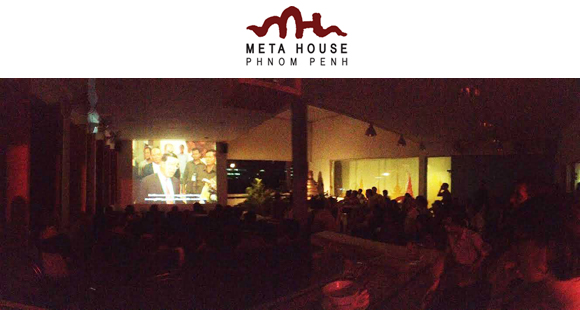
Boundary
Screening at Meta House, Phnom Penh, Cambodia.
June 2014

Shown in the group exhibition “A Brief History of Memory” at The 4th Moscow International Biennale for Young Art, Strategic Projects.
June 2014

Screening at Meta House, Phnom Penh, Cambodia.
June 2014
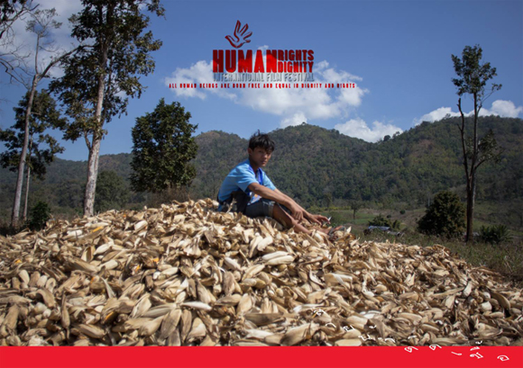
Screening, in competition, at Human Rights Human Dignity International Film Festival, Yangon, Myanmar.
June 2014
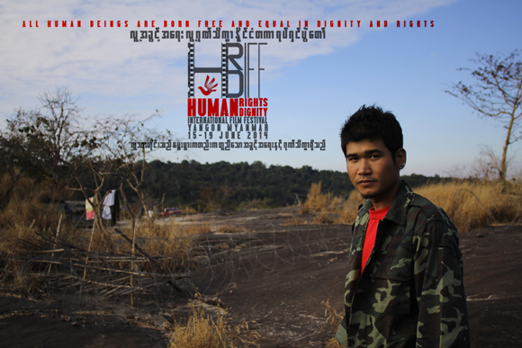
Screening, in competition, at Human Rights Human Dignity International Film Festival, Yangon, Myanmar.
May 2014
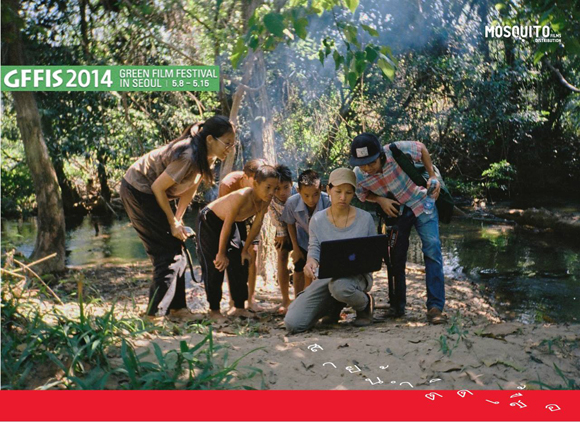
Screening at Green Film Festival in Seoul (GFFIS).
May 2014
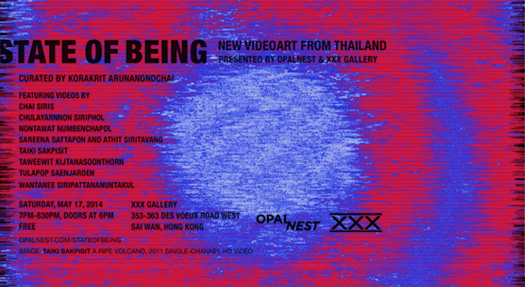
A group show “Chapter 3, State of Being — New Video Art From Thailand” at XXX Gallery, Hong Kong.
April 2014
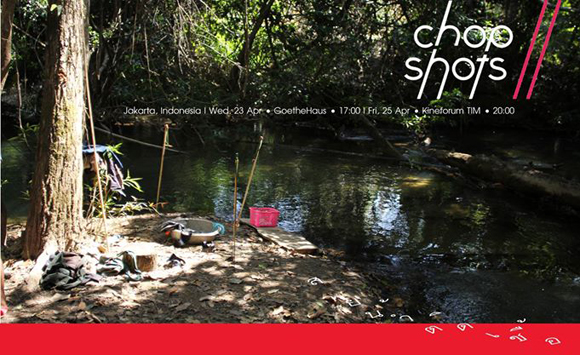
Selected for ChopShots documentary film festival, international competition, Jakarta, Indonesia.
April 2014
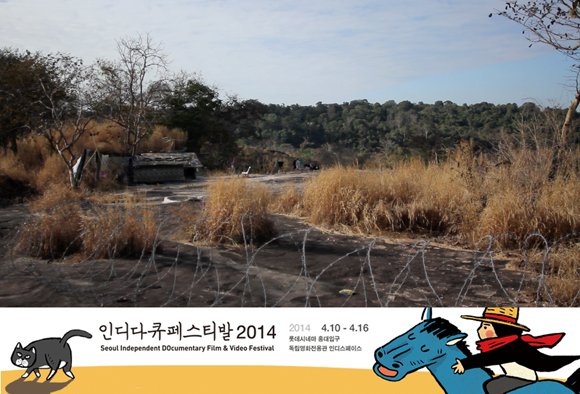
Screening at Seoul Independent Documentary Film & Video Festival.
April 2014
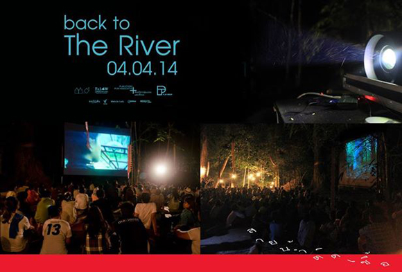
“It was the most impressive screening in my life, like a dream I’ve been imagining. Thank you everyone involved with this movie and everyone who made this screening happen. I was so happy I didn’t want to come back to the city.” — Nontawat Numbenchapol, Director
The premiere at Lower Klity village — where the documentary was shot — was accompanied by merit making for Karen ancestors and a discussion on the progress of Klity creek rehabilitation. Nontawat hopes the 16-year struggle of Klity villagers becomes an inspiration for people fighting for human rights and social justice.
February 2014

Received a Young Director award at the Bangkok Critics Assembly Awards, Thailand.
December 2013
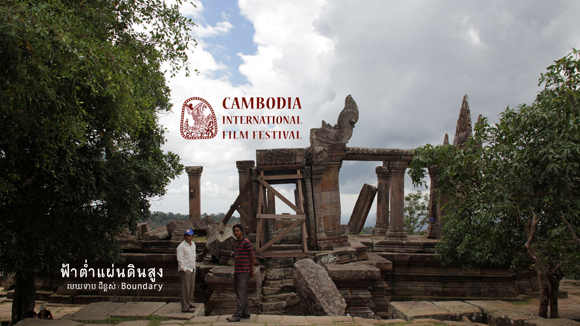
Screening at Cambodia International Film Festival, in the “A Glimpse of Cambodia” documentaries section.
December 2013

Screening at Festival dei Popoli, Florence, Italy, in the Far From Utopia section.
December 2013

Showing at Luang Prabang Film Festival.
November 2013
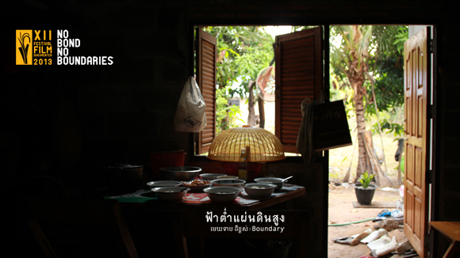
Screening at Festival Film Dokumenter, Yogyakarta, Indonesia, in the No Bond, No Boundaries section.
November 2013

Screening at Kolkata International Film Festival, in the Focus: South East Asia section.
November 2013

Screening in Budapest, Hungary, at Verzio International Human Rights Documentary Film Festival.
November 2013
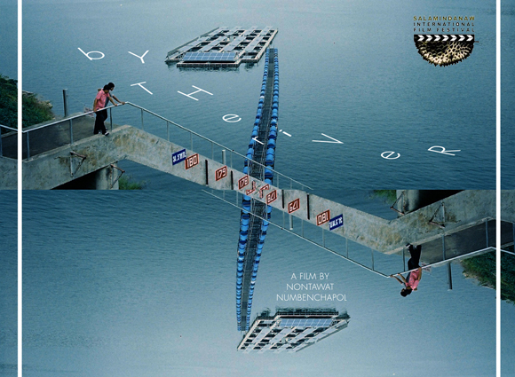
In the main competition of the SalaMindanaw International Film Festival, Philippines.
November 2013

Competed for the New Talent Award at Hong Kong Asian Film Festival 2013 (HKAFF).
November 2013
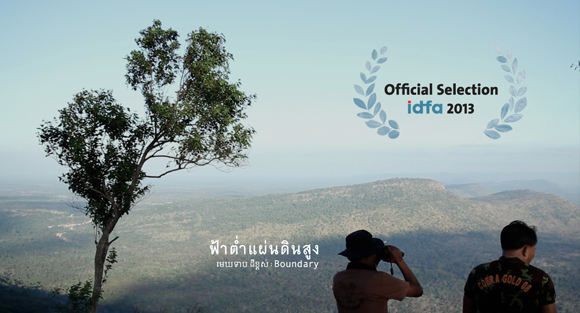
At IDFA — International Documentary Film Festival Amsterdam, in the special programme Emerging Voices from Southeast Asia.
October 2013

International Competition at Yamagata International Documentary Film Festival, Japan 2013.
September 2013
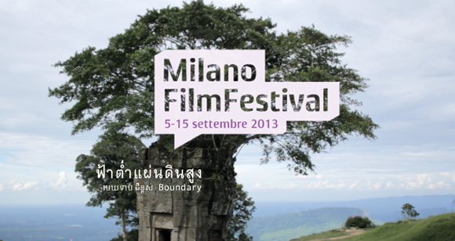
Screening at Milano Film Festival 2013.
August 2013
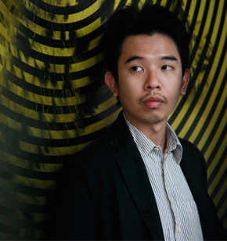
Received a Special Mention award at Locarno International Film Festival 2013.
August 2013
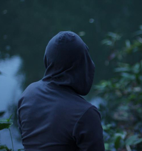
World premiere at Locarno International Film Festival 2013, Concorso Cineasti del Presente.
April 2013
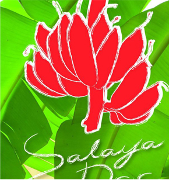
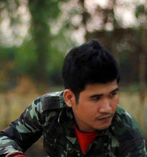
Opening film at Salaya Doc, Thailand 2013.
February 2013
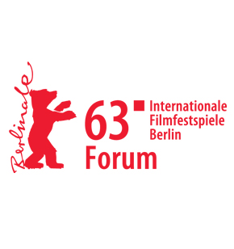

World premiere at Berlin International Film Festival 2013, Forum programme.
December 2012
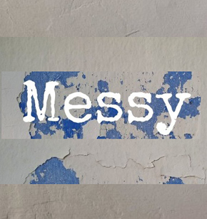

VDO installation & research materials of the forthcoming film “Boundary” by Nontawat Numbenchapol, at Messy, Bangkok, Thailand.
December 2012

Participated in DocNet Campus through the support of DocNet Southeast Asia.
October 2012

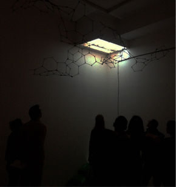
Group Exhibition, Menam Art Fleuve, Ensapc Ygrec, Paris, France.
August 2012

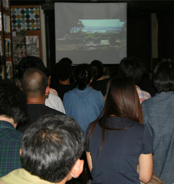
Screening and Talk by Nontawat Numbenchapol, Jim Thompson Art Center, Bangkok, Thailand.
March 2012
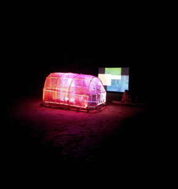
Film on the Rocks Untamed — Winner, Yaonoi Island, Thailand.
March 2012
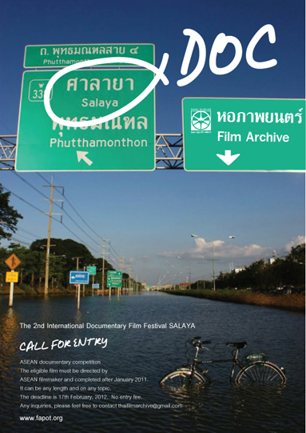

Selected to competition at Salaya International Film Festival, Thailand.
October 2011
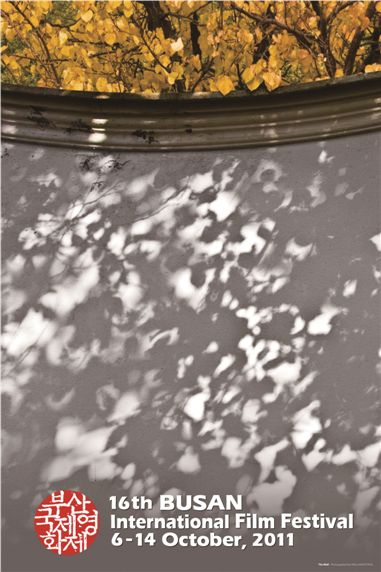

Selected by the DMZ Fund from Asian Network of Documentary, Busan International Film Festival and the DMZ International Documentary, Busan, Korea.
May 2011


Screened at Experimental Film Forum 2011 (Singapore).
January 2011

Won an Arts Network Asia (ANA) 2011 Award.